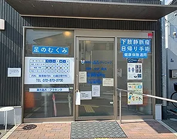
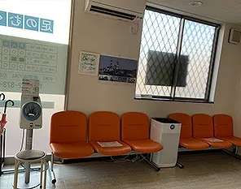

お知らせ
読み込み中...
コロナウイルス対策について
健康状態や患者様の意志に基づき、 任意でのマスク着用をお願い致します。
当院について
院長は循環器専門医です。
下肢静脈瘤・足のむくみ等の
エコー検査、日帰り手術や、
循環器疾患
（高血圧・不整脈など）の
診断・治療を得意としております。
生活習慣病・風邪・腹痛などの
一般内科診療にも対応しております。
特定健康診査（特定健診）、
各種がん検診
（大腸がん・肺がん・前立腺がん）、
肝炎ウイルス検査も
実施しております。
お気軽にご相談ください。
下肢静脈瘤の日帰り手術について
下肢静脈瘤は、
脚の静脈が浮き出たり、
ボコボコとしたこぶのようになる病気です。
足のむくみ・だるさ・重さ・痛み・かゆみ、
皮膚の変色など、
様々な症状の原因となります。
「足が疲れやすい」
「夕方になるとむくむ」
「見た目が気になる」
などのお悩みはありませんか？
当院では超音波検査による詳しい評価を行い、
レーザー治療をはじめ、
患者様それぞれの状態に合わせた
治療をご提案しております。
日帰り手術にも対応しておりますので、
お気軽にご相談ください。
院内紹介


診療時間
| 診療 時間 |
月 | 火 | 水 | 木 | 金 | 土 | 日・祝 |
|---|---|---|---|---|---|---|---|
| 9:00〜 12:00 |
○ | ○ | ○ | × | ○ | ○ | × |
| 16:00〜 18:00 |
○ | ○ | ○ | × | ○ | × | × |
休診日：木曜・土曜午後・日曜・祝日
アクセス
- JR野崎駅から徒歩15分
- JR四条畷駅から近鉄バス 「東花園駅前行き」乗車、 「寺川」下車 徒歩2分
- JR住道駅から近鉄バス 「東花園駅前行き」乗車、 「寺川」下車 徒歩2分
- 専用駐車場あり
スタッフ募集
読み込み中...